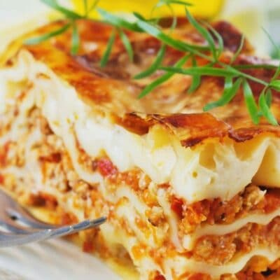

Lasagna

Description
A homemade lasagna full of tender noodles and a hearty meat sauce covered in melted cheese is one of the best comfort foods you can make! All the time you spend making it will be more than worth it when you see your family lining up for seconds!
Ingredients
- 1pound Sweet Italian Sausage Any brand will be delicious.
- ¾ pound Lean Ground Beef The combination of beef and sausage is rich and flavorful.
- ½ cup White Onion This is approximately 1 large onion when minced.
- 1 teaspoon Garlic Mince this up and make your whole house smell amazing!
- 14.5 ounces Diced Tomatoes Canned fire-roasted tomatoes are my favorite.
- 12 ounces Tomato Paste Most recipes only call for tiny amounts of tomato paste, but not this one!
- 29 ounces Tomato Sauce Pick your favorite or make your own!
- 4 tablespoons Fresh Basil Chop it up and keep ½ for the ricotta mixture.
- 2 tablespoons Sugar A bit of sugar brings out the sweetness of the tomatoes.
- 1 tablespoon Italian Seasoning Herbs like rosemary, oregano, basil, thyme, sage, marjoram, etc. are key to any Italian cooking.
- 1 ½ teaspoons Dried Basil Toss in some extra basil to amp up the flavor even more!
- 1 teaspoon Fennel Seeds Fennel seeds are reminiscent of aniseed and layers in a complimentary, warm, sweet flavor.
- 1 teaspoon each, Salt and Pepper Add this to taste, and don't add more until the sauce is almost finished, at which point you can see if it needs it.!
- 12+ Lasagna Noodles These can be purchased at most grocery stores or, if you have a pasta maker, can be made.
- ¾ pound Mozzarella Cheese Is there anything better than a fresh ball of mozzarella?
- ¾ pound Parmesan Cheese This strong, salty cheese is another Italian staple.
Steps
Make the FIlling
- To begin, cook the meat. Add 1 pound sweet Italian sausage, ¾ pound ground beef, ½ cup minced white onion, and 1 teaspoon minced garlic to a Dutch oven or deep cooking pot. Cook over medium heat until the meat is brown. Then stir in 14.5 ounces diced tomatoes, 12 ounces tomato paste, and 29 ounces tomato sauce.
- Now, add seasoning and simmer.Add the following ingredients and mix thoroughly: 4 tablespoons chopped fresh basil, 2 tablespoons sugar, 1 tablespoon Italian seasoning, 1 ½ teaspoons dried basil, 1 teaspoon fennel seeds, and 1 teaspoon of both salt and pepper. Put the lid on your pan and reduce heat. Simmer for 1 ½ hours. Stir occasionally.
- Next, boil the noodles.Bring a large pot of water to a boil. Don’t forget to add salt to the water! When it is fully boiling, carefully drop in 12 or more lasagna noodles. Cook for 8 to 10 minutes. Drain and rinse with cold water.
- Make the ricotta mixture.In a medium or large mixing bowl, mix together 32 ounces ricotta cheese, 2 large beaten eggs, the remaining 2 tablespoons chopped fresh basil, and 1 teaspoon salt.
- Preheat the oven.Set the oven to 375℉ (190℃).
Layer the Lasagna
- As the oven heats, layer the pasta.Start by spreading 1 ½ cups of the meat sauce in the bottom of a 9x13-inch baking dish.
- Noodles are next.Take 6 cooked lasagna noodles and spread them out on top of the sauce lengthwise.
- Then the cheese.Evenly distribute ½ the ricotta mixture across the noodles. Slice or grate ¾ pound mozzarella and layer ⅓ of it over the ricotta.
- Add more meat sauce. Spoon another 1 ½ cups of the meat sauce over the mozzarella and sprinkle with ¼ cup parmesan cheese.
- Repeat. Continue layering in this order until the pan is full or you run out of ingredients. Then, top with any remaining mozzarella or parmesan.
Bake & Serve
- Cover and bake. Use foil to cover the baking dish. To prevent it from sticking to the top, spray the underside with nonstick cooking spray or ensure the foil doesn’t touch the cheese. Bake for 25 minutes. After that, remove the foil and bake for another 25 minutes. The cheese should be melted and the sauce bubbling around the edges of the pan.
- Cool it off.Remove from the oven and let it cool for 10 to 15 minutes.
Return to Home